The Swahili translation on this page is being checked by a Swahili speaker. The button names are taken directly from the dashboard, so those match what is on screen.
Tafsiri ya Kiswahili katika ukurasa huu inakaguliwa na mzungumzaji wa Kiswahili. Majina ya vitufe yamechukuliwa moja kwa moja kutoka kwenye dashibodi.
House 5 has small sensors in most rooms. They measure temperature and humidity every few minutes. The readings go to a website. You can open that website and see what every room has been doing, day by day, going back to 2023.
The website can draw the same readings as five different graphs. Part 1 of this guide covers the first graph, the line graph. Part 2 covers the other four and how to switch between them.
Hii ni nini
Nyumba 5 ina vihisi vidogo katika vyumba vingi. Vinapima joto na unyevunyevu kila baada ya dakika chache. Takwimu zinakwenda kwenye tovuti. Unaweza kufungua tovuti hiyo na kuona hali ya kila chumba, siku kwa siku, tangu mwaka 2023.
Tovuti inaweza kuchora takwimu hizo hizo kwa namna tano tofauti za grafu. Sehemu ya 1 ya mwongozo huu inahusu grafu ya kwanza, grafu ya mstari. Sehemu ya 2 inahusu nyingine nne na jinsi ya kubadilisha kati yake.
Address: actionresearchprojects.net/graphs/arc-temp-humid
The page asks for a password. Ask Andy for it.
It works on a phone or a computer. Once it has loaded, it keeps working even if the internet stops.
Hatua ya 1. Fungua ukurasa
Anwani: actionresearchprojects.net/graphs/arc-temp-humid
Ukurasa utaomba nenosiri. Muulize Andy akupe.
Unafanya kazi kwenye simu au kwenye kompyuta. Ukishafunguka mara moja, unaendelea kufanya kazi hata kama mtandao umekatika.
Click the globe at the top right. Choose English or Kiswahili.
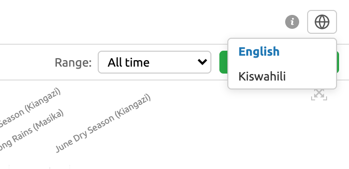
The whole page changes, including the room names. This is the sensor list in Kiswahili:
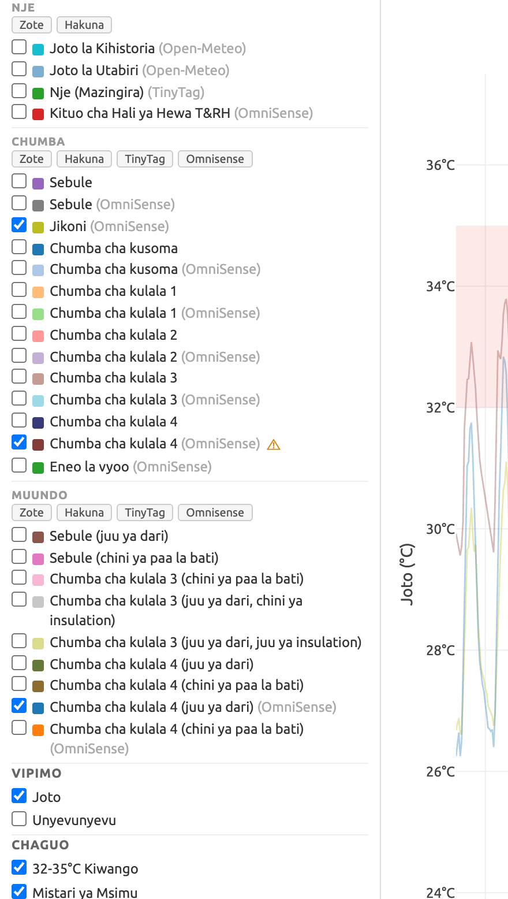
Hatua ya 2. Chagua lugha yako
Bofya alama ya dunia iliyo juu kulia. Chagua "English" au "Kiswahili". Ukurasa wote utabadilika, pamoja na majina ya vyumba. Picha iliyo hapo juu inaonyesha orodha ya vihisi kwa Kiswahili.
Top left there are two boxes. In the first box choose House 5. In the second box choose Line Graph.
When the page opens it shows every sensor at once, over three years. That is too much to read.
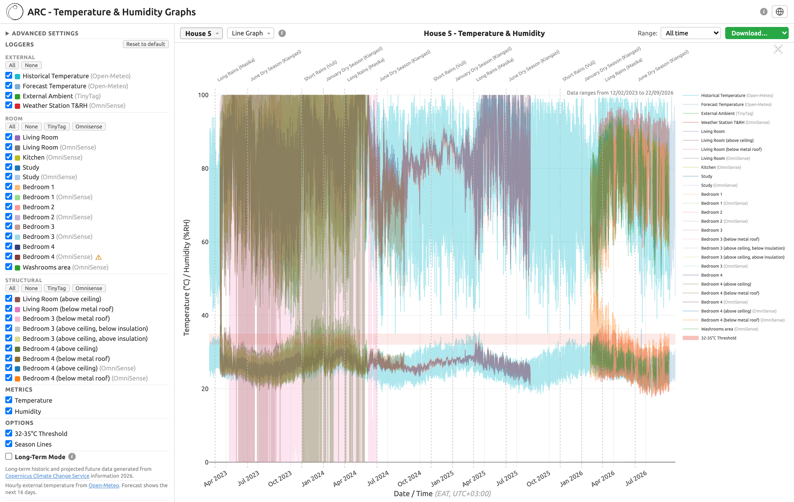
Steps 4 and 5 cut it down to something you can read.
Hatua ya 3. Chagua nyumba na aina ya grafu
Juu kushoto kuna visanduku viwili. Kwenye sanduku la kwanza chagua Nyumba 5. Kwenye sanduku la pili chagua Grafu ya Mstari.
Ukurasa ukifunguka unaonyesha vihisi vyote kwa pamoja, kwa miaka mitatu. Ni vingi mno kusoma. Hatua ya 4 na ya 5 zinapunguza.
In the list on the left, press None under each heading. That clears everything.
Then tick only the ones you want. For this example, tick three:
Under METRICS, untick Humidity. Leave Temperature ticked.
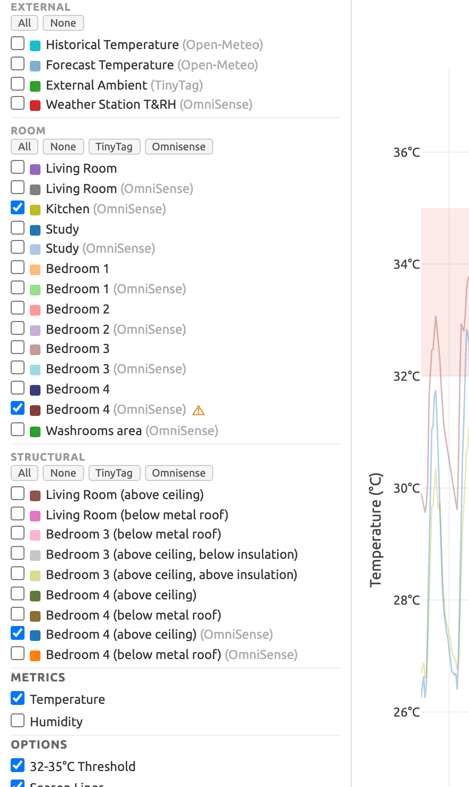
The three headings mean:
| Heading | Where the sensor is |
|---|---|
| EXTERNAL (NJE) | Outside the house |
| ROOM (CHUMBA) | Inside a room, where people are |
| STRUCTURAL (MUUNDO) | Inside the roof and ceiling, not where people are |
Hatua ya 4. Chagua vihisi vya kuonyesha
Kwenye orodha ya kushoto, bofya Hakuna chini ya kila kichwa. Hii inaondoa vyote.
Kisha weka alama kwenye vile unavyotaka tu. Kwa mfano huu, weka alama kwenye vitatu:
- Jikoni (OmniSense) - chini ya CHUMBA
- Chumba cha kulala 4 (OmniSense) - chini ya CHUMBA
- Chumba cha kulala 4 (juu ya dari) (OmniSense) - chini ya MUUNDO
Chini ya VIPIMO, ondoa alama kwenye Unyevunyevu. Acha Joto kikiwa na alama.
Vichwa vitatu vina maana hii: NJE ni nje ya nyumba. CHUMBA ni ndani ya chumba ambako watu wanakaa. MUUNDO ni ndani ya paa na dari, siyo mahali watu wanakaa.
Top right, next to Range, choose Month. Then choose February 2026.
Hatua ya 5. Chagua tarehe
Juu kulia, kando ya Muda, chagua Mwezi. Kisha chagua February 2026.
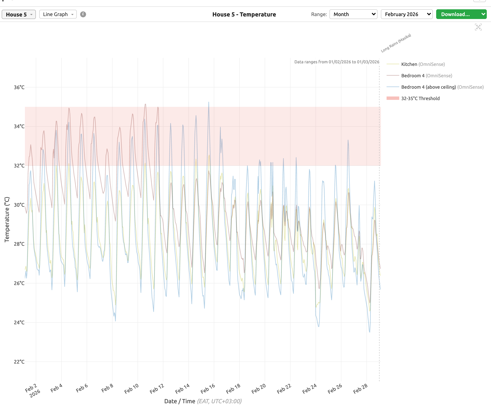
Now look at Bedroom 4, the brown-red line. From 1 to 12 February it climbs into the pink band on most days, and at night it stays higher than the other two lines. After 12 February it comes down and follows the other lines closely. Step 7 explains what happened on that date.
The sensor above the ceiling is the blue line. At night it drops faster than Bedroom 4 does. So the heat was not coming down from the roof. It was staying inside the room.
Hatua ya 6. Soma grafu ya mstari
Kila mstari ni kihisi kimoja. Rangi zinalingana na orodha iliyo upande wa kulia wa grafu.
Eneo la rangi ya pinki ni nyuzi 32 hadi 35. Mstari ukiingia kwenye eneo hilo, chumba kina joto la kuzingatia.
Kila mstari unapanda na kushuka kila siku. Joto mchana, baridi usiku. Hii ni kawaida.
Sasa angalia Chumba cha kulala 4, mstari wa rangi ya kahawia-nyekundu. Kuanzia tarehe 1 hadi 12 Februari unapanda hadi kwenye eneo la pinki siku nyingi, na usiku unakaa juu kuliko mistari mingine miwili. Baada ya tarehe 12 Februari unashuka na kufuata mistari mingine kwa karibu. Hatua ya 7 inaeleza kilichotokea siku hiyo.
Kihisi cha juu ya dari ni mstari wa buluu. Usiku unashuka haraka kuliko Chumba cha kulala 4. Kwa hiyo joto halikuwa linashuka kutoka kwenye paa. Lilikuwa linabaki ndani ya chumba.
Next to Bedroom 4 (OmniSense) there is a small orange triangle. It means someone has already looked at this data and marked it. Hold the mouse over the triangle to read why.
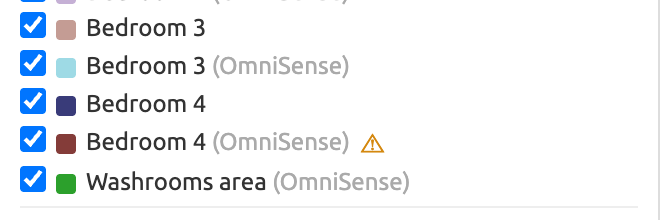
The explanation says the data before 12 February 2026 is not reliable. Furniture placed across the window, together with curtains kept closed, is thought to have blocked the airflow through the room, so the heat stayed inside. It says this is suspected, not proved.
That is the same date where the brown-red line drops in Step 6.
Note: this explanation stays in English even when the page is set to Kiswahili.
Hatua ya 7. Alama ya tahadhari
Kando ya Chumba cha kulala 4 (OmniSense) kuna pembetatu ndogo ya rangi ya machungwa. Inamaanisha mtu ameshaangalia data hii na kuiwekea alama. Weka kishale juu ya pembetatu ili kusoma sababu.
Maelezo yanasema data ya kabla ya tarehe 12 Februari 2026 siyo ya kuaminika. Samani iliyowekwa mbele ya dirisha, pamoja na mapazia yaliyokuwa yamefungwa, inadhaniwa ilizuia hewa kupita ndani ya chumba, kwa hiyo joto lilibaki ndani. Yanasema hili linadhaniwa, halijathibitishwa.
Hii ni tarehe ile ile ambapo mstari wa kahawia-nyekundu unashuka katika Hatua ya 6.
Kumbuka: maelezo haya yanabaki kwa Kiingereza hata ukurasa ukiwekwa kwa Kiswahili.
Click ADVANCED SETTINGS at the top of the left-hand list. Tick Exclude anomalous data. The marked readings disappear from the graph. Untick it to bring them back.
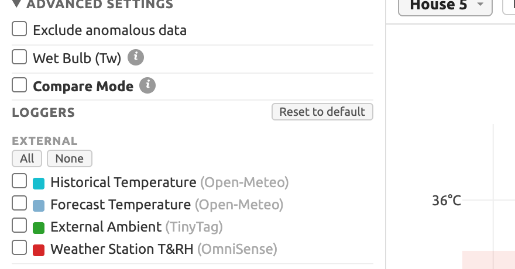
Hatua ya 8. Ficha data iliyowekewa alama
Bofya MIPANGILIO YA JUU juu ya orodha ya kushoto. Weka alama kwenye Ondoa data isiyo ya kawaida. Data iliyowekewa alama itaondoka kwenye grafu. Ondoa alama ili kuirudisha.
The second box along the top is the graph type. Click it and choose from the list. The sensors you ticked and the dates you chose stay the same, so you can look at the same readings five different ways.
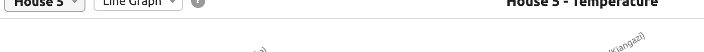
| Graph | What it answers |
|---|---|
| Line Graph Grafu ya Mstari |
What happened, hour by hour? (Part 1) |
| Adaptive Comfort Faraja ya Kubadilika |
Were the rooms comfortable for the people in them? |
| Histogram Histogramu |
How often did each temperature happen? |
| Average Profiles Wastani wa Profaili |
What does an average day look like? |
| Beta Features Vipengele vya Beta |
Are the sensors working, and what are the numbers? |
Hatua ya 9. Badilisha aina ya grafu
Sanduku la pili juu ni aina ya grafu. Bofya na uchague kutoka kwenye orodha. Vihisi ulivyoweka alama na tarehe ulizochagua vitabaki vilevile, kwa hiyo unaweza kuangalia takwimu zilezile kwa namna tano tofauti.
Grafu ya Mstari - kilichotokea saa kwa saa (Sehemu ya 1). Faraja ya Kubadilika - kama vyumba vilikuwa na hali nzuri kwa watu. Histogramu - ni mara ngapi kila kiwango cha joto kilitokea. Wastani wa Profaili - siku ya kawaida inaonekanaje. Vipengele vya Beta - kama vihisi vinafanya kazi, na tarakimu zenyewe.
This one takes every day in the period and works out the average day. The bottom axis is the hour of the day, not the date. It is the clearest way to see when a room is hottest.
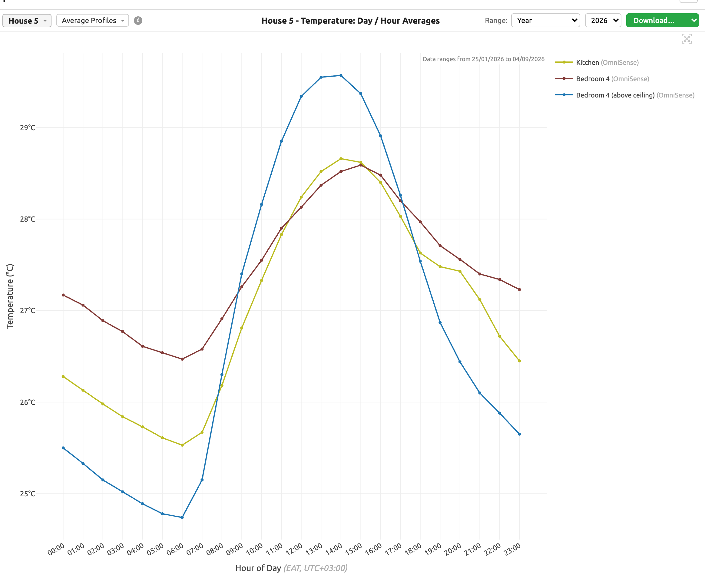
In this picture, over the whole of 2026:
You can also change Cycle from Day to Year to see the seasons instead of the hours.
Wastani wa Profaili
Hii inachukua kila siku katika kipindi ulichochagua na kutafuta wastani wa siku. Mhimili wa chini ni saa ya siku, siyo tarehe. Hii ndiyo njia rahisi zaidi ya kuona chumba kina joto zaidi wakati gani.
Katika picha hii, kwa mwaka wote wa 2026: sehemu ya juu ya dari (buluu) ina joto zaidi mchana, karibu saa saba, lakini ina baridi zaidi usiku. Chumba cha kulala 4 (kahawia-nyekundu) kina joto zaidi kuliko vingine viwili kuanzia saa kumi na mbili jioni hadi saa moja asubuhi. Huo ndio muda ambao chumba kinatumika.
Unaweza pia kubadilisha Mzunguko kutoka Siku kwenda Mwaka ili kuona misimu badala ya saa.
This shows how often each temperature happened. The taller the bar, the more readings at that temperature. The bars are stacked, one colour for each sensor.
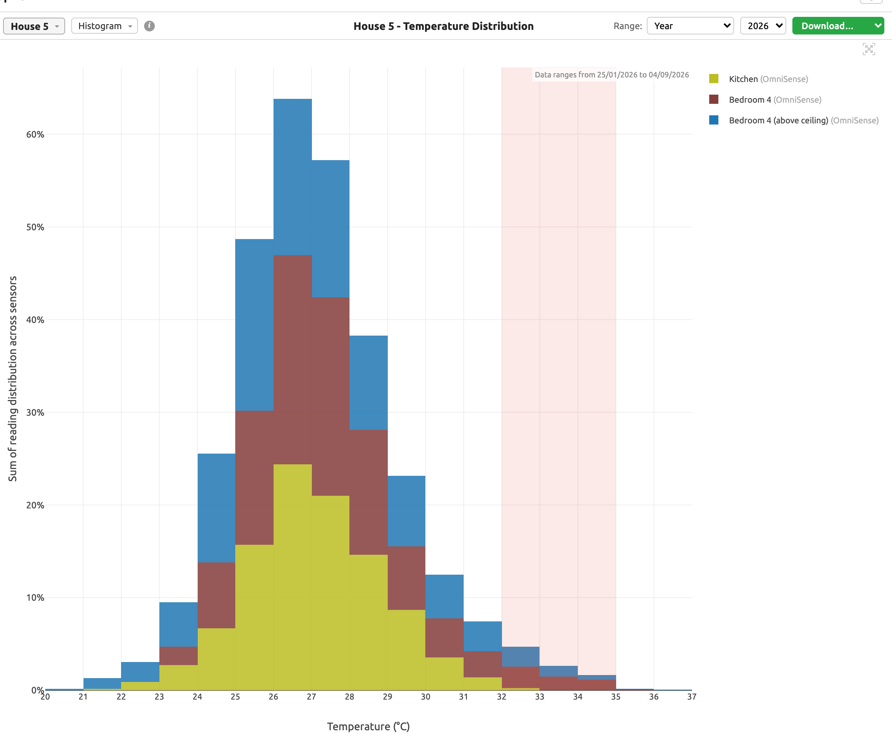
Most readings in 2026 sit between 26 and 28 degrees. The pink band on the right is 32 to 35 degrees. Only a small part of the bars reaches it, and most of that part is Bedroom 4.
Histogramu
Hii inaonyesha ni mara ngapi kila kiwango cha joto kilitokea. Baa ndefu zaidi inamaanisha masomo mengi zaidi kwenye kiwango hicho. Baa zimepangwa juu ya nyingine, rangi moja kwa kila kihisi.
Masomo mengi ya mwaka 2026 yako kati ya nyuzi 26 na 28. Eneo la pinki upande wa kulia ni nyuzi 32 hadi 35. Sehemu ndogo tu ya baa inafika hapo, na sehemu kubwa yake ni Chumba cha kulala 4.
This asks one question: were the rooms comfortable for the people in them? People accept a warmer room when the weather outside has been warm for a while, so the comfortable range moves with the weather. That is what the sloping green band is.
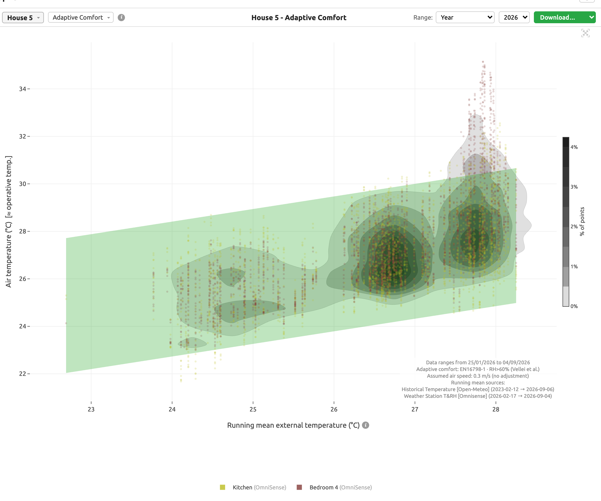
Each dot is one reading. Dots inside the green band were comfortable. Dots above it were too hot.
Only room sensors appear on this graph. Roof and ceiling sensors are left out, because nobody sits in the roof.
Faraja ya Kubadilika
Hii inauliza swali moja: je, vyumba vilikuwa na hali nzuri kwa watu waliomo? Watu wanakubali chumba chenye joto zaidi kama hali ya hewa ya nje imekuwa ya joto kwa siku kadhaa. Kwa hiyo eneo la starehe linabadilika pamoja na hali ya hewa. Hiyo ndiyo bendi ya kijani inayoinama.
Kila alama ni usomaji mmoja. Alama zilizo ndani ya bendi ya kijani zilikuwa katika hali nzuri. Alama zilizo juu ya bendi zilikuwa na joto kupita kiasi.
Vihisi vya chumba pekee ndivyo vinavyoonekana kwenye grafu hii. Vihisi vya paa na dari vimeachwa, kwa sababu hakuna mtu anayekaa kwenye paa.
Beta means these are new and still being tested. Choose Beta Features in the graph box, then a second box appears with five choices. Two of them are useful day to day.
Vipengele vya Beta
Beta inamaanisha hivi ni vipya na bado vinajaribiwa. Chagua Vipengele vya Beta kwenye sanduku la grafu, kisha sanduku la pili litatokea likiwa na chaguo tano. Viwili kati yake vinasaidia kila siku.
Use this first whenever you think a sensor has stopped. One row per sensor. Green means readings arrived. Orange means a gap of more than six hours. Purple means admin has marked that stretch, as in Step 7.
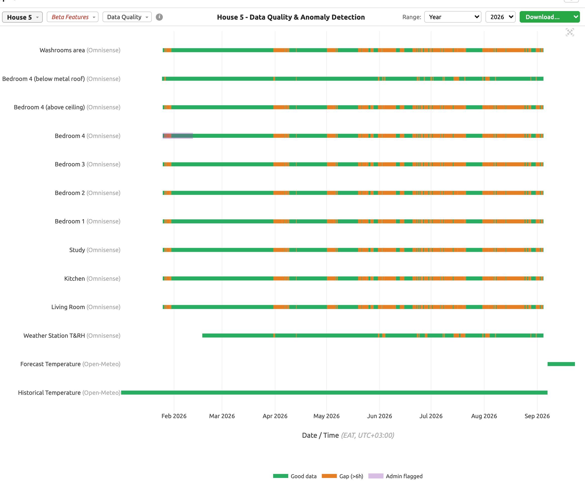
In this picture the orange gaps get worse from April onwards. That is the gateway box losing power, not the sensors failing. You can also see that Bedroom 4 has a purple mark at the start of the year, and that the outdoor weather station only starts in February.
Tumia hii kwanza unapodhani kihisi kimeacha kufanya kazi. Safu moja kwa kila kihisi. Kijani inamaanisha masomo yalifika. Machungwa inamaanisha pengo la zaidi ya saa sita. Zambarau inamaanisha msimamizi ameweka alama, kama katika Hatua ya 7.
Katika picha hii mapengo ya machungwa yanaongezeka kuanzia Aprili. Hilo ni kisanduku cha lango kukosa umeme, siyo vihisi kuharibika.
A table of numbers for the sensors and dates you chose.
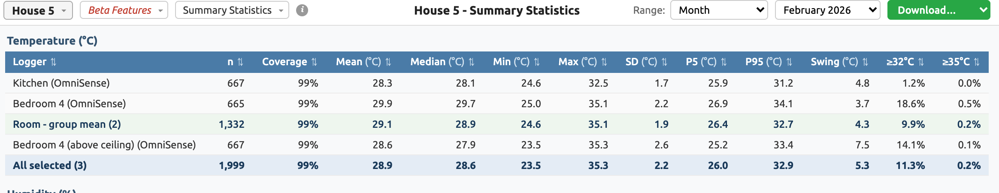
The columns worth knowing:
| Column | Meaning |
|---|---|
| Coverage | How much of the period the sensor actually recorded. Low numbers mean gaps, so treat the rest of the row carefully. |
| Mean | The average. |
| Max | The highest single reading. |
| Swing | The difference between the coolest and the hottest. |
| ≥32°C | How much of the time the room was at or above 32 degrees. |
In February 2026, Bedroom 4 was at or above 32 degrees for 18.6% of the time. The Kitchen was 1.2%.
Jedwali la tarakimu kwa vihisi na tarehe ulizochagua. Safu muhimu: Ufikiaji ni kiasi cha kipindi ambacho kihisi kilirekodi kweli. Wastani ni wastani. Juu ni usomaji mkubwa zaidi. Mabadiliko ni tofauti kati ya baridi zaidi na joto zaidi. ≥32°C ni muda ambao chumba kilikuwa na nyuzi 32 au zaidi.
Mwezi Februari 2026, Chumba cha kulala 4 kilikuwa na nyuzi 32 au zaidi kwa asilimia 18.6 ya muda. Jikoni ilikuwa asilimia 1.2.
Temperature Differential, Decrement Factor and Thermal Lag are for Andy and Archie rather than for day-to-day use. In short: the first shows how much hotter it is inside than outside, the second shows how well the building flattens out the outdoor swing, and the third shows how many hours the indoor peak trails the outdoor peak.
Tofauti ya Joto, Kipengele cha Kupunguza na Ucheleweshaji wa Joto ni kwa ajili ya Andy na Archie, siyo matumizi ya kila siku.
| What you see / Unachoona | What to do / Unachotakiwa kufanya |
|---|---|
| One line stops and there is a gap. Mstari mmoja unakatika na kuna pengo. |
Open Beta Features, then Data Quality, to see how big the gap is. Usually the battery is finished. Write down the room and the dates. Fungua Vipengele vya Beta, kisha Ubora wa Data, ili kuona pengo ni kubwa kiasi gani. Mara nyingi betri imeisha. Andika jina la chumba na tarehe. |
| All the lines stop on the same day. Mistari yote inakatika siku moja. |
The gateway box lost power. Andy and Archie get an email automatically when this happens, so they already know. Check that the gateway box and its battery are plugged in. Kisanduku cha lango kimekosa umeme. Andy na Archie wanapata barua pepe moja kwa moja, kwa hiyo tayari wanajua. Hakikisha kisanduku cha lango na betri yake vimeunganishwa kwenye umeme. |
| One room stays much hotter than the others for many days, and there is no warning triangle. Chumba kimoja kinakaa na joto kubwa kuliko vingine kwa siku nyingi, na hakuna pembetatu ya tahadhari. |
Write down the room and the dates, and tell Andy or Archie. It is not an emergency. Andika jina la chumba na tarehe, kisha mwambie Andy au Archie. Siyo dharura. |
Andy Simmonds (Simmonds.Mills) and Archie Worthington (ARC).
Nani wa kuuliza
Andy Simmonds (Simmonds.Mills) na Archie Worthington (ARC).
Screenshots taken from the dashboard on 12/09/2026. Line graph and summary statistics show February 2026; the other graphs show the whole of 2026. Dashboard source: ARC_graphs/arc_temp_humid.